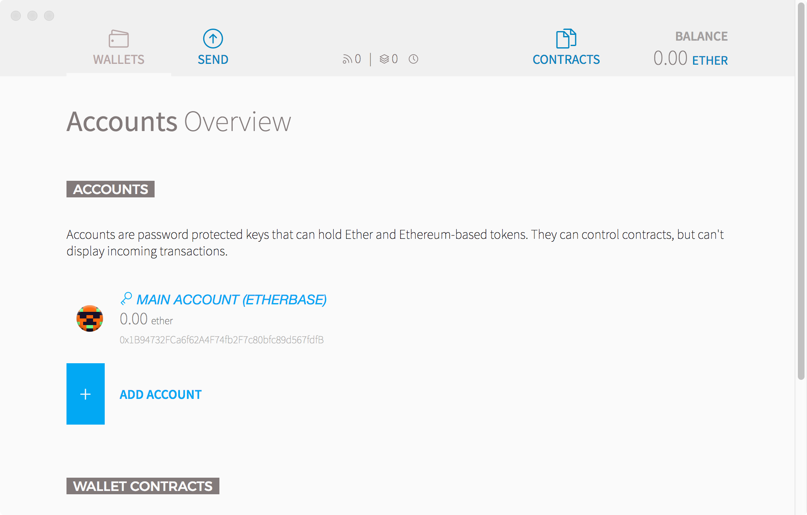
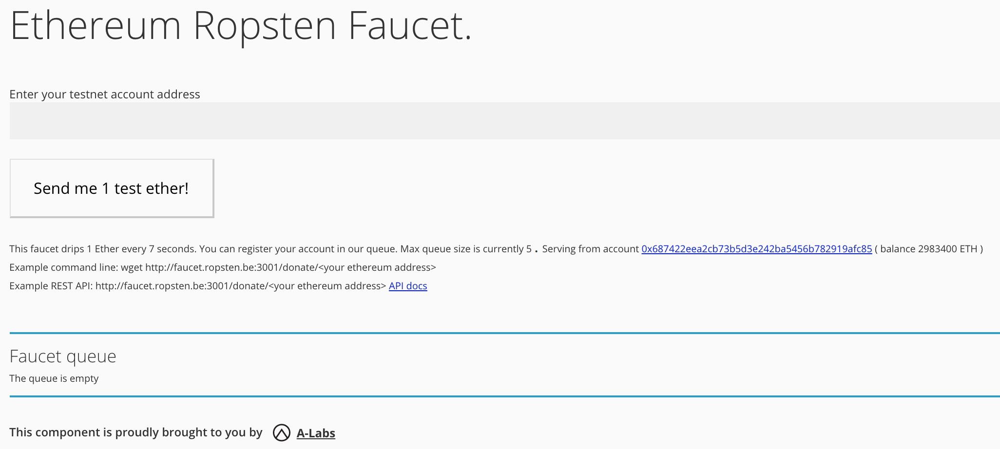
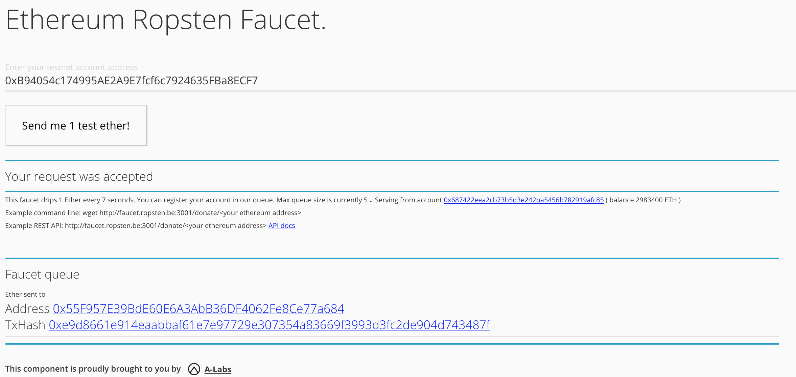
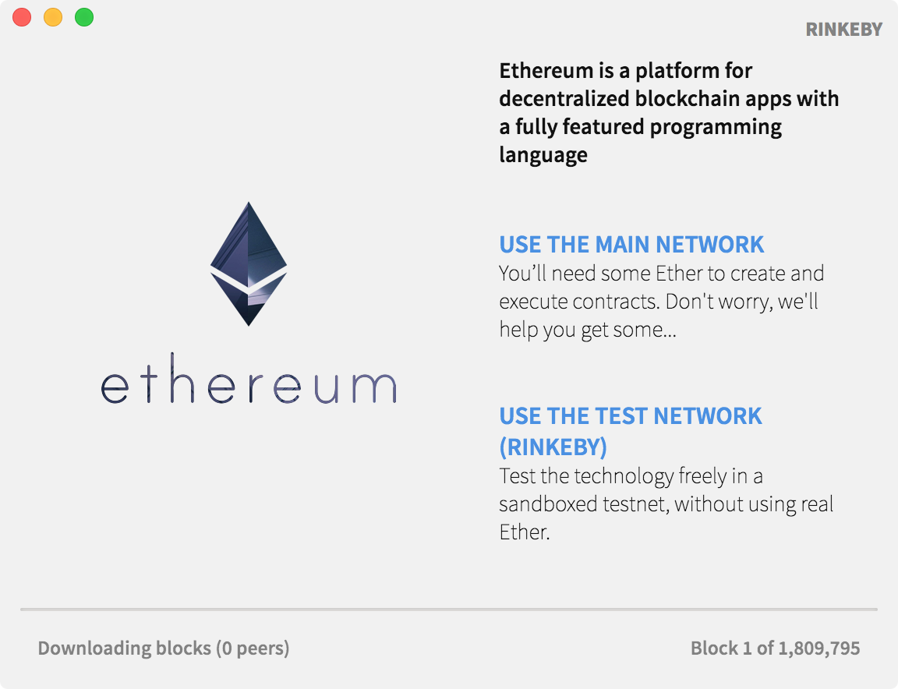
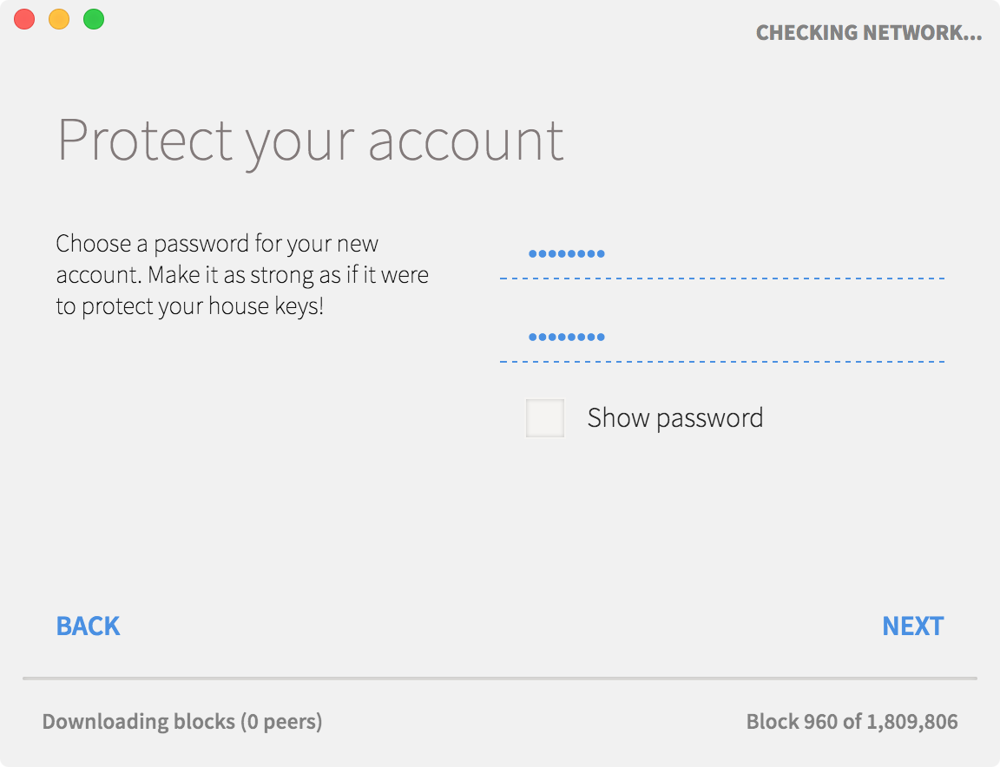
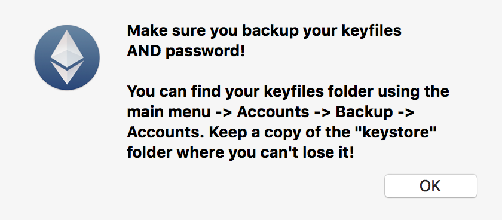
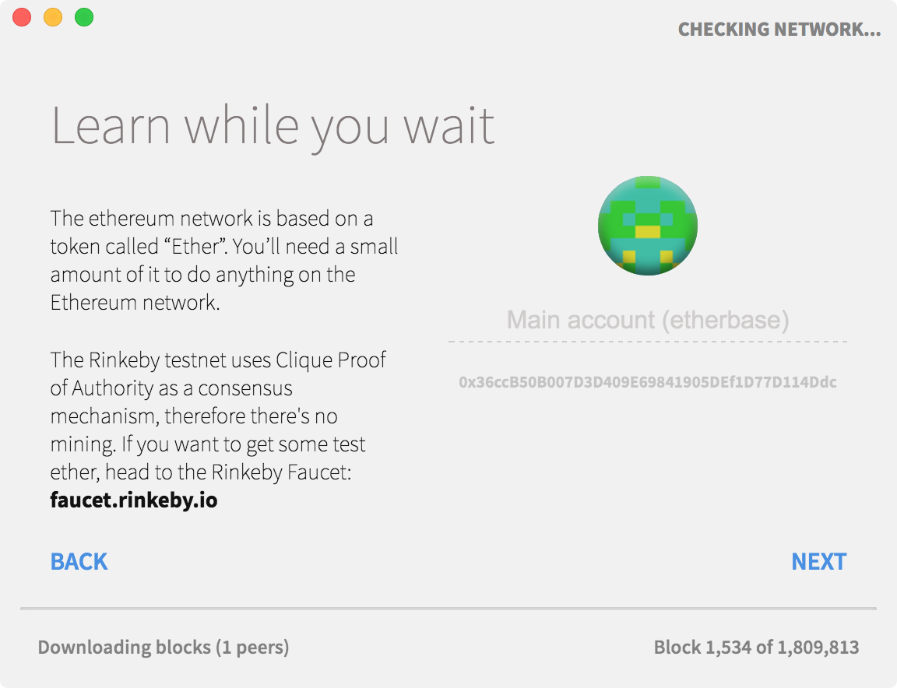
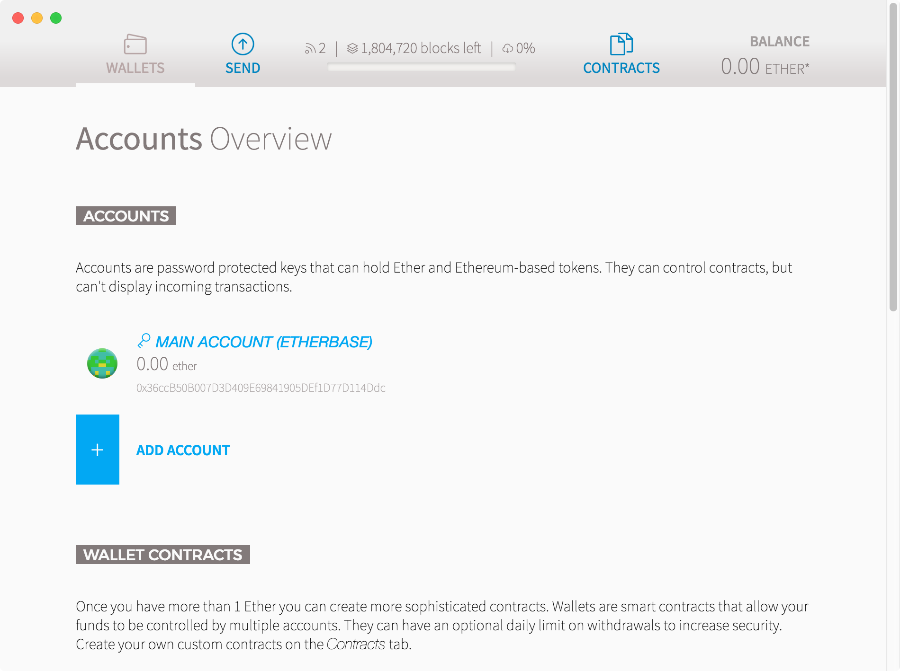
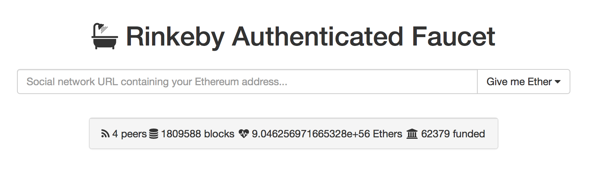

| 知乎专栏 ｜ 多维度架构 | | | 微信号 netkiller-ebook | | | QQ群：128659835 请注明“读者” |
目录
开始学习以太坊时阅读大量文章常常会提到 Mist 一头雾水，后来才知道 Mist 就是 Ethereum Wallet。 Ethereum Wallet 是软件名字， Mist 是项目名字。
Ethereum Wallet 可以在以太坊首页下载，如果你需要安装历史版本可以访问 https://github.com/ethereum/mist/releases
参数：
neo@MacBook-Pro ~ % "/Applications/Ethereum Wallet.app/Contents/MacOS/Ethereum Wallet" --help
Usage: /Applications/Ethereum Wallet.app/Contents/MacOS/Ethereum Wallet --help
[Mist options] [Node options]
Mist options:
--mode, -m App UI mode: wallet, mist.[string] [default: "wallet"]
--node Node to use: geth, eth [string] [default: null]
--network Network to connect to: main, test
[string] [default: null]
--rpc Path to node IPC socket file OR HTTP RPC hostport (if
IPC socket file then --node-ipcpath will be set with
this value). [string]
--swarmurl URL serving the Swarm HTTP API. If null, Mist will
open a local node.
[string] [default: "http://localhost:8500"]
--gethpath Path to Geth executable to use instead of default.
[string]
--ethpath Path to Eth executable to use instead of default.
[string]
--ignore-gpu-blacklist Ignores GPU blacklist (needed for some Linux
installations). [boolean]
--reset-tabs Reset Mist tabs to their default settings. [boolean]
--logfile Logs will be written to this file in addition to the
console. [string]
--loglevel Minimum logging threshold: info, debug, error, trace
(shows all logs, including possible passwords over
IPC!). [string] [default: "info"]
--syncmode Geth synchronization mode: [fast|light|full] [string]
--version, -v Display Mist version. [boolean]
--skiptimesynccheck Disable checks for the presence of automatic time sync
on your OS. [boolean]
Node options:
- To pass options to the underlying node (e.g. Geth) use the --node- prefix,
e.g. --node-datadir
Options:
-h, --help Show help [boolean]
|  |
Ethereum Wallet 工作原理非常简单，启动 Ethereum Wallet 是，Ethereum Wallet 会首先启动 geth，然后在启动 Ethereum Wallet 应用程序。
geth 负责与以太坊网络连接，包括主网，Ropsten和Rinkeby两个测试网，Solo 本地开发模式。geth
例如主网的启动目录是 /Users/neo/Library/Ethereum/geth.ipc 参数是：
/Users/neo/Library/Application Support/Ethereum Wallet/binaries/Geth/unpacked/geth --syncmode light --cache 1024
/Users/neo/Library/Application Support/Ethereum Wallet/binaries/Geth/unpacked/geth --testnet --syncmode light --cache 1024 --ipcpath /Users/neo/Library/Ethereum/geth.ipc
首先启动 geth
钱包默认是连接到下面地址。
IPC endpoint opened: /Users/neo/Library/Ethereum/geth.ipc
连接到其他ipc地址
"/Applications/Ethereum Wallet.app/Contents/MacOS/Ethereum Wallet" --rpc /Users/other/Library/Ethereum/geth.ipc
在 Ethereum Wallet 启动期间，随时可以进入Javascript控制台。
neo@MacBook-Pro ~/Library/Ethereum/geth % geth attach Welcome to the Geth JavaScript console! instance: Geth/v1.8.1-stable-1e67410e/darwin-amd64/go1.9.4 modules: admin:1.0 debug:1.0 eth:1.0 net:1.0 personal:1.0 rpc:1.0 txpool:1.0 web3:1.0 > eth.accounts ["0xb94054c174995ae2a9e7fcf6c7924635fba8ecf7", "0xf56b81a2bcb964d2806071e9be4289a5559bb0fa", "0x997e5ca600e19447d0b82afbf9c7f00de2b39b16"] >
/Users/neo/Library/Application Support/Ethereum Wallet/binaries/Geth/unpacked/geth --syncmode light --cache 1024
/Users/neo/Library/Application Support/Ethereum Wallet/binaries/Geth/unpacked/geth --testnet --syncmode light --cache 1024 --ipcpath /Users/neo/Library/Ethereum/geth.ipc
|  |
输入账号然后点击 “Send me 1 test ether” 按钮
|  |
当现实 “Your request was accepted” 时，表示你的请求已经接受，接下来耐心等待。
连接测试网络，启动 "Ethereum Wallet"，主菜单-Develop-Network，选择 "Rinkeby - Test network"。
如果这个菜单是灰色的，可以你在本地运行过 geth，解决方法如下：
mkdir ~/ethereum/rinkeby geth --datadir ~/ethereum/rinkeby --rinkeby --rpc console
在另一个终端窗口执行
neo@MacBook-Pro ~/ethereum/rinkeby % "/Applications/Ethereum Wallet.app/Contents/MacOS/Ethereum Wallet" ~/ethereum/rinkeby/geth.ipc
或者使用TCP方式连接
"/Applications/Ethereum Wallet.app/Contents/MacOS/Ethereum Wallet" --rpc http://localhost:8545
如果你没有安装 geth，可以使用下面的方法
neo@MacBook-Pro ~/ethereum/truffle % "/Users/neo/Library/Application Support/Ethereum Wallet/binaries/Geth/unpacked/geth" --rinkeby --syncmode light --cache 1024 --ipcpath /Users/neo/Library/Ethereum/geth.ipc
INFO [02-22|11:43:23] Maximum peer count ETH=0 LES=100 total=25
INFO [02-22|11:43:23] Starting peer-to-peer node instance=Geth/v1.8.1-stable-1e67410e/darwin-amd64/go1.9.4
INFO [02-22|11:43:23] Allocated cache and file handles database=/Users/neo/Library/Ethereum/rinkeby/geth/lightchaindata cache=768 handles=128
INFO [02-22|11:43:27] Persisted trie from memory database nodes=355 size=65.27kB time=399.41µs gcnodes=0 gcsize=0.00B gctime=0s livenodes=1 livesize=0.00B
INFO [02-22|11:43:27] Initialised chain configuration config="{ChainID: 4 Homestead: 1 DAO: <nil> DAOSupport: true EIP150: 2 EIP155: 3 EIP158: 3 Byzantium: 1035301 Engine: clique}"
INFO [02-22|11:43:27] Loaded most recent local header number=1813389 hash=d58d6b…a489d9 td=3366103
INFO [02-22|11:43:27] Starting P2P networking
INFO [02-22|11:43:29] UDP listener up net=enode://e84fbdb5d1b75d18fe45fdd13fdad9d5a8ff6d54b82cc8383525870054b91108010ccf8776ac8a50146c9abf9d43c0117af2bbe0cc2668874d269c3817dec47e@[::]:30303
WARN [02-22|11:43:29] Light client mode is an experimental feature
INFO [02-22|11:43:29] RLPx listener up self="enode://e84fbdb5d1b75d18fe45fdd13fdad9d5a8ff6d54b82cc8383525870054b91108010ccf8776ac8a50146c9abf9d43c0117af2bbe0cc2668874d269c3817dec47e@[::]:30303?discport=0"
INFO [02-22|11:43:29] IPC endpoint opened url=/Users/neo/Library/Ethereum/geth.ipc
INFO [02-22|11:43:30] Mapped network port proto=udp extport=30303 intport=30303 interface="UPNP IGDv1-IP1"
INFO [02-22|11:43:31] Mapped network port proto=tcp extport=30303 intport=30303 interface="UPNP IGDv1-IP1"
INFO [02-22|11:43:32] Block synchronisation started
INFO [02-22|11:43:33] Imported new block headers count=13 elapsed=245.507ms number=1813402 hash=08317c…fd1806 ignored=0
INFO [02-22|11:43:48] Imported new block headers count=1 elapsed=898.705µs number=1813403 hash=8a7c1b…5e1652 ignored=0
INFO [02-22|11:44:03] Imported new block headers count=1 elapsed=892.924µs number=1813404 hash=511a30…561d32 ignored=0
然后正常启动钱包程序 Launchpad - Ethereum Wallet
启动过程比较缓慢，启动后会同步区块信息
弹出第一个界面，让你选择网络，这里选择 Rinkeby 测试网络
|  |
输入密码，要求八位字母和数字组合
|  |
提示你备份钱包
|  |
生成账号 0x36ccB50B007D3D409E69841905DEf1D77D114Ddc
|  |
这时你会看到右下角的数字不断地变化，表示正在同步区块信息。同步过程比较漫长，请耐心等待。
|  |
想获取Rinkeby测试网络中的以太币，需要去申请，地址：
https://faucet.rinkeby.io|  |
输入你的钱包地址，并点击“Give me Ether”，有三种选项，前面是获得的以太币数量，后面是冷却时间，在冷却时间过后才能进行下一次以太币申请。例如第一项是生成3个以太币，8小时后才能再次申请。
如果一切顺利，你会看到你的钱包地址已经多出了申请数量的以太币。
注意：如果申请的人数很多，需要排队等待
下载创世区块
mkdir ~/.rinkeby cd ~/.rinkeby wget https://www.rinkeby.io/rinkeby.json
初始化区块
geth --datadir=$HOME/.rinkeby init rinkeby.json
启动以太坊，这里采用Light node模式，仅仅下载区块信息，不会运行交易，速度比较快。
geth --networkid=4 --datadir=$HOME/.rinkeby --syncmode=light --ethstats='yournode:Respect my authoritah!@stats.rinkeby.io' --bootnodes=enode://a24ac7c5484ef4ed0c5eb2d36620ba4e4aa13b8c84684e1b4aab0cebea2ae45cb4d375b77eab56516d34bfbd3c1a833fc51296ff084b770b94fb9028c4d25ccf@52.169.42.101:30303
solo 实际上就是geth 的 --dev 参数
开发模式会创建一个账号，同时启动挖矿，ETH多的你用不完。
/Users/neo/Library/Application Support/Ethereum Wallet/binaries/Geth/unpacked/geth --dev --minerthreads 1 --ipcpath /Users/neo/Library/Ethereum/geth.ipc
"/Users/neo/Library/Application Support/Ethereum Wallet/binaries/Geth/unpacked/geth" --datadir=$HOME/ethereum/private init $HOME/ethereum/genesis.json "/Users/neo/Library/Application Support/Ethereum Wallet/binaries/Geth/unpacked/geth" --networkid=4444 --datadir=$HOME/ethereum/private --ipcpath /Users/neo/Library/Ethereum/geth.ipc
在 Ethereum Wallet 钱包上会显示所有自己创建或者Watch的合约，有些合约仅仅是测试用的，用过即废弃，合约列表依然会显示在那里，只是变成灰色并且无法选择
怎样把无用的合约从列表删除呢？
1. Ethereum Wallet上打开开发者工具（从窗口选择开发->切换开发工具->钱包界面，或者输入快捷键Alt+Ctrl+I），显示出控制台界面
2. 查询Watch Contract列表 - 在控制台输入命令: CustomContracts.find().fetch();
3. 在合约列表中找到需要删除的合约，并且复制ContractID
4. 删除合约，在控制台输入命令：CustomContracts.remove('<ContractID>')